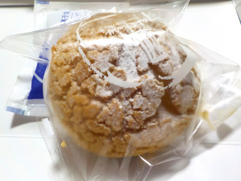
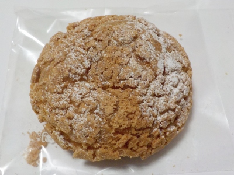

更新日 : 2026/06/21

近頃シュークリームを販売していないお菓子屋さんがよくあります。
リビドーには色んな種類のお菓子があるので、欲しいものが見つかりやすくてとてもいいです。
シュークリームは注文してからクリームを入れるタイプなので、持って帰ってすぐに食べました。
シュー生地がふんわりしつつ弾力がありました。トロっとした感じのクリームとよく合って美味しかったです。
2023/09/06 小さいけどクリームがしっかり入っているので、ずっしりしてます。
2024/03/25 出来立てを食べると更に美味しい。

2026/06/21 クッキー記事がぽろぽろ落ちるので、お皿の上で食べました。
【おいしいものを食べよう。】【たくさん寝よう。】
【ソロ活をしよう!】【季節感のあることをしよう。】【動画視聴はほどほどに。】【当サイトの全てのコンテンツは無断転載禁止です。】